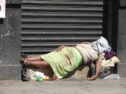

Din bedste ven i Boston kommer til at være Google Maps.
Boston er egentlig en meget gå venlig by, men det er også en meget stor by, så hvis du ikke vile bruge hele dit ophold på at gå rundt, så har de også et helt udmærket offentligt transport system.
Når du lander i Boston lufthaven kan du gratis tage "Silver line", som er en bus der tager dig ind forskellige steder i midten af byen. Det skal dog siges at man skal betale for at keomme med den på vej tilbage til lufthavnen.
Her er et link til at læse mere:
Silver Lines hjemmeside
tekst tekst tekst tekst
HI Boston hostel
Der kommer et billede her på et senere tidspunkt
Homestay med de hjemløse?
